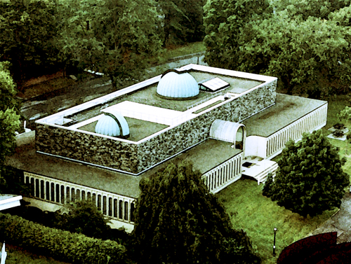

Personal Info and Research
Originally from Keene, NH, I'm now a senior in the department of Astrophysical Sciences at Princeton University. My main research interests include Cosmology, Large Scale Structure, and Low-Mass Stars. I am also dedicated to increasing public engagement in science and improving science education. See my Curriculum Vitae for more information about me and a list of my publications.
During the summer of 2013, I worked as a member of Edo Berger's Time-Domain Research Group at the Harvard-Smithsonian Center for Astrophysics, through the CfA's Astronomy REU, a wonderful program that I would highly recommend to any undergraduates. In collaboration with Dr. Peter K. G. Williams and Prof. Berger, I investigated the magnetic properties of Ultracool Dwarfs (UCDs), very low-mass stars and brown dwarfs. By studying the X-ray emission coming from the stellar coronae, we hope to understand how magnetic fields (which through poorly understood mechanisms heat the coronae) are connected to rotation in the UCDs. Upon further investigation, we found evidence that X-ray activity may decrease with faster rotation- contrary to the behavior of more massive stars - and we believe that the magnetic topology may play a larger role in X-ray emission in these objects than the magnetic field strength alone. Our work was recently submitted to the Astrophysical Journal: Paper I and Paper II can be found on the astrophysics arXiv. I also presented a poster at the January 2014 AAS meeting, a copy of which can be found here .
My most recent Junior Paper, in collaboration with Prof. Michael Strauss, centered on the identifcation and properties of quasars found in the Sloan Digital Sky Survey. The classical model of quasar properties places quasars into two categories, Type I and Type II, based on whether they are shielded by dust clouds. My work centered on identifying a sample of "fat quasars" which do not match the characteristics of either type, but instead share properties of both Type I and Type II.
My first Junior Paper was supervised by Prof. Gáspár Bakos. This involved analyzing data from his HATNet extrasolar planet search in order to find minor planets (asteroids) within our solar system and generate their light curves. Through studying the period of these light curves (i.e. how fast the minor planets rotate), we hope to be able to improve our understanding of minor planets' development history and much more.
During the summer of 2012, I collaborated with Dr. Renyue Cen as part of Princeton's Undergraduate Summer Research Program, another great research opportunity for Princeton students. My work analyzed the mass and luminosity functions of galaxies in Dr. Cen's cosmological hydrodynamic simulations from z~9 to z~0.5. Click here to view the brief summary I wrote on some of the results.

How to Contact Me
Send mail to:
2855 Frist Center
Princeton, NJ 08544
Workstation:
Astro Undergraduate Lab
Peyton Hall, Room 029
email: bacook@princeton.edu
cell phone: 603-313-2888
The PSPS
On campus, I am the President of the Princeton Society of Physics Students. We're a group dedicated to making the life of a Princeton physics (or astrophysics!) student more rewarding, more social, and more fun! As President, I am in charge of organizing the majority of our events (with the fantastic help of the Physics Department staff), coordinating all of our officers and their projects, and being the voice of the club to students and the public. Recently, I also authored the club's constitution. To learn more about our organization, click on our logo to the right!
Here are some useful links I use most every day
|

|
| Last updated 11/06/13 - by Ben Cook | Background is a ground-based image of the Coma Cluster (Abel 1656) taken by DSS2 c/o NASA & Hubble. |